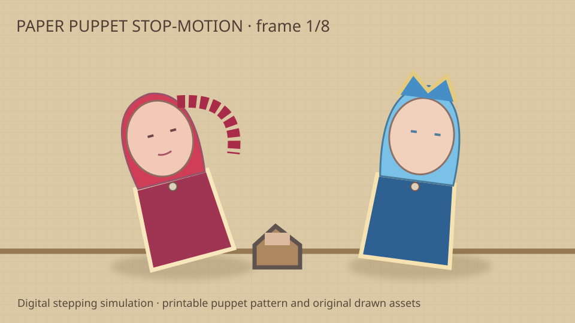

Paper-cutout stop-motion · digital simulation
Eight individually authored SVG exposures, deliberately stepped at 8 unique poses per second within a 24fps timeline. No real camera capture is claimed.

Printable source patterns · Exposure chart · Review board